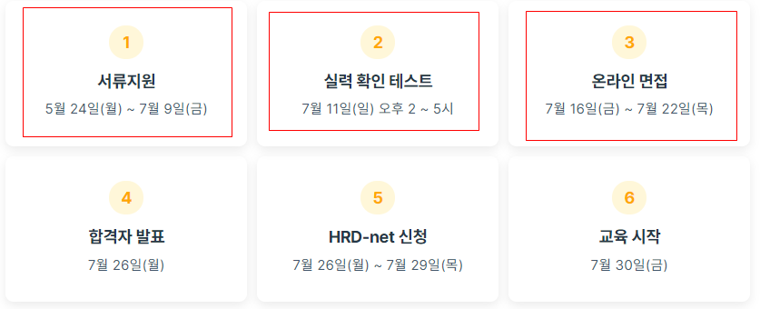
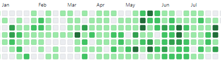
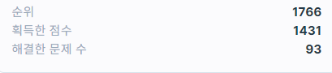
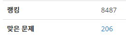

데브코스를 선택하게 된 계기
저는 학교를 다니면서 VR, 모바일 관련한 프로젝트를 하면서 사용자와 상호작용하고 즉각적인 피드백을 받는다는 프론트엔드 분야에 관심을 많이 가지게 됐어요. 사용자와 함께😊
졸업 후 프론트엔드 플랫폼 중 모바일과 웹을 고민했을 때 웹이 장점이 많아 관심을 가지게 됐습니다. 다양한 기기에서 접근이 가능하고 어디서든 사용이 가능한 점..? 여러분은 어떻게 생각하시나요..❓
프로젝트 경험도 있고(여러 프레임워크 사용) 어느정도 기본 문법만 익히면 프론트엔드 개발로 취직이 될 것이라 어리석은 생각을 하고, 6개월간 HTML, CSS, JS, React를 공부했습니다. 취업을 할 수 있었지만 제가 원하는 회사(코드리뷰하고 개발문화가 있는 회사를 다니면서 개발자로서 성장할 수 있는 회사)를 들어가기엔 얕게 공부하고 가볍게 생각한 것을 알게 됐습니다. 🤐 정신차리자..!
바뀐 생각 덕에..? 저는 프론트엔드 공부를 하면서 어떤 주제를 모를 때까지 깊게 공부하는 경험이 저에게 필요하다는 것을 알게 됐습니다. 공부를 해보니 쉽지 않더라고요..🤓
프로그래머스에서 데브코스과정을 모집하길래 커리큘럼을 보니 Js에 대해 깊이 공부하는 것과 많은 멘토 분들과 피드백이 있다는 것을 알게 되어 신청을 하게 됐습니다. 혼자서 데브코스에서 많은 경험을 하고 성장하는 모습 매일 상상했답니다.😆

데브코스 과정과 당시 심정

데브코스에서 심사하는 건 빨간 네모 쳐진 3가지 항목인데 진실된 마음(진실된 마음을 가지고 잘 표현해봐요!)과 프로그래머스 1~2레벨 알고리즘 풀 수 있을 정도의 Js실력(프론트엔드는 오직 Javascript로 봤어요)가 된다면 합격할 수 있습니다.✨✨✨
서류지원
엄청 공들여서 저의 열정적인 모습을 어필하고 부족하지만 잘할 수 있습니다 라고 썼던거 같아요. 하지만 공돌이이기 때문에 여자친구가 내용은 좋은데 표현을 못하냐며 첨삭 해주니 글이 예쁘게 변했습니다. 자소서에 산소호흡기 달아줬어요😭
실력확인테스트
이 과정에서 코딩테스트가 가장 쉬웠어요. 저만 그런 거 아니고 모두 그럴 거에요. 모두 할 수 있습니다🙌
저는 평소에 친구와 매일 1~3문제씩 2달 동안 알고리즘 공부(현재는 3달이에요😎)를 해왔기 때문에 자신있게 테스트를 봤던 거 같습니다. 살면서 두번째 코테 통과! 짜릿해..🎊
온라인 면접
어떻게 준비해야 될지 몰라서 그래도 제가 쓴 자기소개서 읽으면서 예상 질문(자기소개서 중심 내용) 생각하면서 준비했습니다. 하지만 면접 볼 때는 예상 질문을 뽑은 게 별 도움은 안됐어요. 당당하고 내가 했던 모든 것을 잘 말 할 수 있는 게 중요한 거 같아요. 하지만 저도 면접에서 하고 싶은 말 다 못했답니다.🙄 만약 다했다면 떨어졌나..? 그 결과 합격 정말 눈물 났습니다..😂

합격 후 소감
매번 교육프로그램(부스트캠프, 우테코, 싸피..) 코딩테스트도 떨어지는데 이번에는 이 악물고 열심히 준비(알고리즘 많이 풀기..?) 했더니 좋은 결과가 나왔어요. 정말 개발자로서 성장하고 싶었고 놓치기 싫고 어떻게든 좋은 인상 주려고 면접에서 더 오버 했어요.(나 엄청 열정적이야, 나 잘할 수 있어 이렇게..?) 원래 결과에 대해 기대를 많이 하는 편이지만 데브코스 날짜 기다리면서 혹시라도 빨리 결과 나오는거 아니야 이러고 매일 메일함 확인했어요.
간절한 만큼 데브코스에서 5개월 동안 열심히 하고 훌륭한 개발자가 돼야겠어요. 개발공부는 물론 생각을 글로 써서 다른사람에게 잘 전달할 수 있게 커뮤니케이션을 목표로 앞으로 포스팅을 하겠습니다.
아래 사진은 지난 나의 노오오력..? 1일 1커밋, 프로그래머스, 백준 풀이 문제 수 약 300개..?

|  |  |